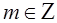
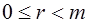
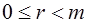

Таккослама ва унинг хоссалари
Хар кандай бутун
сонни 
Таъриф. Агар иккита a ва b бутун сонни m натурал сонига бўлганда бир хил колдиклар хосил бўлса, у холда a ва b сонлар m модул бўйича тенг колдикли сонлар ёки таккосланувчи сонлар дейилади ва куйидагича ёзилади:
a=b (mod m) (1)
Ушбу таърифга кўра:
a=q1m+r, 
b=q2m+r, 
–ab=(q1–q2)m
тенгликлар ўринли.
Агар а = mq+r бўлса, у холда а = r (mod m) каби ёзиш мумкин. Агар а сони m сонига колдиксиз бўлинса, у холда а = 0 (mod m) бўлади.
Мисол.
1) 23 ва 14 сонлари 9 модул бўйича таккосланувчи сонлардир:
23=14 (mod 9), 23=2*9+5, 14=1*9+5, 23-14=(2-1)*9.
2) -15 ва 13 сонлари 4 модул бўйича таккосланувчи сонлардир:
-15=13 (mod 4), -15=-4*4+1, 13=3*4+1, -15-13=(-4-3)*4
Ихтиёрий бутун сонни m га бўлиш натижасида куйидаги: 0, 1, 2,..., m-1 колдиклардан бири хосил бўлади. Яъни, барча бутун сонлар m та синфларга бўлинади.
Таъриф. m натурал сонига бўлганда бир хил колдик берадиган сонлар тўплами m модул бўйича чегирмалар синфи дейилади ва чегирмалар синфи С0, С1, ..., Сm-1 каби белгиланади.
Cr – синфнинг элементлари m q+r кўринишга эга бўлиб, q га хар хил бутун кийматлар бериш натижасида бу элементларни хосил килиш мумкин.
Мисол. m=7 бўлганда r=3 колдик хосил киладиган сонлар 7q+3 кўринишига эга. Агарда q=0, ±1, ±2, ±3, ... десак, 7 модул бўйича 3 колдик берадиган сонлар синфи:
{..., -18, -11, - 4, 3, 10, 17, 24,...} хосил бўлади.
Демак, иккита сонни m модул бўйича таккосланувчи бўлиши учун улар шу модул бўйича битта синфда ётиши лозим ва аксинча.
Таккослама куйидаги хоссаларга эга:
1о. Симметрия конуни: Агар a=b(mod m) бўлса, у холда b=a(mod m) ўринли;
Масалан: 20=47 (mod 9) ==> 47=20 (mod 9)
2о. Транзитивлик конуни: Агар a=b(mod m), b=с(mod m) бўлса, у холда a=с(mod m) ўринли;
Масалан: 13=8 (mod 5), 8=3 (mod 5) ==> 13=3 (mod 5)
3о. Рефлексивлик конуни: a=a(mod m) ўринли;
Масалан: 13=13 (mod 5)
4о. Бир хил модулли таккосламаларни хадлаб кўшиш (айириш) мумкин:
a1=b1(mod m), a2=b2(mod m),..., an=bn(mod m) ==>
a1±a2±...±an=b1±b2±...±bn(mod m);
Масалан: 7=2 (mod 5), 13=8 (mod 5), 6=1 (mod 5) ==> 7+13+6=2+8+11 (mod 5)
5о. Таккосламани бир кисмидаги сонни иккинчи кисмига карама-карши ишора билан ўтказиш мумкин: a+b=c(mod m) ==> b=c-a(mod m);
Масалан: 8+3=7 (mod 4) ==> 8=7-3 (mod 4)
6о. Таккосламани ихтиёрий кисмига модулга каррали бўлган сонни кўшиш мумкин: a=b(mod m) ==> a+mk=b(mod m);
Масалан: 13=1 (mod 4) ==> 13+2*4=1 (mod 4)
7о. Бир хил модулли таккосламаларни хадлаб кўпайтириш мумкин:
a1=b1 (mod m), a2=b2 (mod m),..., an=bn (mod m) ==>
a1a2...an=b1b2...bn (mod m);
Масалан: 7=2 (mod 5), 13=8 (mod 5), 6=1 (mod 5) ==> 7*13*6=2*8*11 (mod 5) ==> 546=176 (mod 5)
8о. Таккосламани иккала кисмини бир хил мусбат бутун даражага кўтариш мумкин: a=b(mod m) ==> ak=bk(mod m);
Масалан: 7=2 (mod 5) ==> 72=22 (mod 5) ==> 49=4 (mod 5)
9о. Таккосламани иккала кисмини бир хил бутун сонга кўпайтириш мумкин: a=b(mod m) ==> ak=bk(mod m);
Масалан: 7=12 (mod 5) ==> 7*2=12*2 (mod 5)
10о. Таккосламани иккала кисмини модул билан ўзаро туб бўлган кўпайтувчига кискартириш мумкин:
ЭКУБ(d,m)=1, ad=bd(mod m) ==> a=b(mod m);
Масалан: 15=39 (mod 8) ==> 15:3=39:3 (mod 8) ==> 5=13 (mod 8)
11о. a=b(mod mn) ==> a=b(mod m), a=b(mod n);
Масалан: 21=6 (mod 15) ==> 21=6 (mod 3), 21=6 (mod 5)
12о. a=b(mod m) ==> ЭКУБ(a,m)=ЭКУБ(b,m);
Масалан: 21=6 (mod 15) ==> ЭКУБ(21,15)=ЭКУБ(6,15)
13о. Куйидаги тенгликлар ўринли:
(a±b)mod m=((a mod m)±(b mod m))mod m;
(ab)mod m=((a mod m).(b mod m))mod m;
(a(b±c))mod m=((a.b mod m)±(a.c mod m))mod m.
Масалан:
(11±9)mod 7=((11 mod 7)±(9 mod 7)) mod 7;
(11.9)mod 7=((11 mod 7).(9 mod 7))mod 7;
(11.(9±3))mod 7=((11.9 mod 7)±(11.3 mod 7))mod 7
Машклар. Куйидагиларни хисобланг:
1) 3768934 (mod 674)
2) 938934523 (mod 51)
3) 149126 (mod 27)
4) 18! (mod 162)
5) (1+2+3+...+100) (mod 13)
6) (12+22+...+252) (mod 21)
7) 146243 (mod 21)